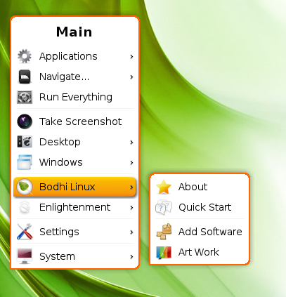

[kliknite na bilo koju sliku za uvećanje]
Ovo je uvod o E17 Menijima za početnike. Ova revizija je napravljena kako bi pokrila Menije u Bodhi Linux-u od verzija 2.0 do 2.2. E17 ima dva menija i svoj jedinstveni metod prilagođavanja menija vašim potrebama. Meni koji se pojavi kada kliknete na Start dugme ili levim klikom miša na prazan prostor radne površine se zove Glavni Meni. On će biti u potpunosti predstavljen ovde, a ostatak će biti predstavljen na stranici Izmena Menija. Dok se meni, koji se pojavi desnim klikom miša na prazan prostor radne površine, naziva Omiljeni Meni. Na standardnoj(default) instalaciji Bodhi Linux-a, Omiljeni Meni je prazan, ali, kao što ćete videti na stranici Izmena Menija, vrlo je lako dodati vaše omiljene programe ovom meniju.Predstavljanje
Meni je sveprisutni deo modernih Grafičkih Operativnih sistema i obično mu se pristupa kliktanjem na dugme ili ikonicu na panelu ili taskbaru. Na primer, grozno Windows Start dugme.
Enlightenment (E17) obezbeđuje ovaj uobičajen korisnički interfejs kroz upotrebu Start Gedžeta koji se može postaviti bilo gde na radnu površinu, obično se nalazi na Polici. Većina Profila koji se nalaze u Bodhi Linux-u imaju "Start Dugme", i u većini Tema, izgleda kao Bodhi Linux list.
Međutim, moguće je ukloniti Start dugme. Ovo će možda zvučati čudno ljudima nenaviknutim na E17. Ali ne plašite se, ovo ne uklanja Glavni Meni, već samo njegovo dugme. E17 meniji će se pojaviti levim klikom bilo gde na praznom prostoru radne površine.
Kao dodatak pristupanja E17 Glavnom Meniju bilo preko Start dugmeta ili levim klikom na radnu površinu,u Bodhi Linux-u postoji standardni(default) taster-vez(key-binding) za otvaranje Glavnog Menija preko tastature. To je taster Meni! Na većini tastatura ovaj taster se nalazi desno od tastera space, između Alt i Ctrl tastera i izgleda kao slika desno. Naravno, ova prečica na tastaturi se može izmeniti od strane korisnika ili kompletno ukloniti.
Gde je nestao?
Mala digresija sa aspekta menija u E17 koja može zbuniti nove korisnike Bodhi Linux-a: Kada klizite na dole kroz listu Glavnog Menija, pod-meniji se uvek otvaraju na desno od menija. Uobičajeno, ovo ne predstavlja problem, ali šta ako otvorite Glavni Meni blizu desne ivice ekrana? U tom slučaju, pod-meni se može otvoriti i delimično ili kompletno da bude van ekrana. Moguće da je to smicalica u implementaciji menija u E17, ali ta misao je možda malo preuranjena. U ovom scenariju, prosto morate da pomerite pokazivač(cursor) prema desnoj ivici ekrana, i cela struktura menija se pomera u levo da pokaže skrivena polja pod-menija. Još jedan primer elegancije i lepote Enlightenment-a!
Struktura Menija
Ovaj deo kratko opisuje strukturu Glavnog Menija u BodhiLinux-u, iako stvarno najbolji način da se upoznate sa menijem je da ga otvorite i istražite. Bez obzira na to, Glavni Meni u standardnoj(default) instalaciji Bodhi Linux-a je izlistan, od vrha ka dnu:
{kind=link}
Programi (Applications)
Sadrži većinu GKI(GUI) programa instaliranih na vašem sistemu, uređenih u pod-menijima prema kategorijama. Većina komandno-linijskih(command-line)programa nije prikazana u Meniju Programa po standardu(default-u). Oni, međutim, mogu da se dodaju.Upravljanje (Navigate)...
Upravljanje je u stvari struktura integrisanog menija za Enlightenment Fajl Menadžer (EFM), standardnog(default) Bodhi fajl menadžera od verzije 2.1.0. Omogućava vam otvaranje mnogih direktorijuma direktno iz menija. On ima jedinstvenu opciju da može da prikaže pod-menije direktorijuma unutar direktorijuma, takođe.
Da bi EFM funkcionisao, potrebno je da EFM (Starter) Modul bude uključen. Ovaj modul je uključen po standardu(default-u), sa modulom Mesta(Places) kao alternativu koji takođe ima strukturu integrisanog menija. Može biti isključen(unloaded), u tom slučaju će nestati iz menija, kao i prestati da radi.Pokreni Sve (Run Everything)
Pokreće Pokreni Sve(Run Everything) Aplikaciju. Nož Švajcarske vojske(Swiss Army Knife) Enlightenment-a!Pokreni snimak ekrana (Take Screenshot)
Snimak ekrana jednim klikom. Ovu opciju omogućava Snimak(Shot) Modul, koji je uključen po standardu(default-u). Kao i EFM (Starter) i Mesta(Places) Moduli, Snimak(Shot) može biti isključen, u kom slučaju će opcija Pokreni snimak ekrana(screenshot) nestati iz Glavnog Menija.
Napomena: Snimak ekrana radne površine se takođe može pokrenuti pritiskom na taster Štampaj Ekran(Print Screen), a snimak ekrana samo nekog prozora može se uraditi desnim klikom na većini ivica-prozora(window-borders) i odabirom Pokreni Snimak(Take Shot).Radna Površina (Desktop)
Omogućava lako prebacivanje na bilo koju virtualnu radnu površinu kao i brz pristup Podešavanjima Virtualnih Radnih Površina(Virtual Desktops Settings) i Podešavanja Polica(Shelves Settings). Takođe imate i opciju prikaza ili skrivanja svih otvorenih prozora na trenutnoj Radnoj Površini.Prozori (Windows)
Pruža mogućnost pospremanja prozora, opciju za nalaženje izgubljenih prozora i omogućava brz pristup bilo kom otvorenom prozoru.Bodhi Linux
Ovde ćete naći Bodhi Linux-ovo proširenje za E17 Glavni Meni. Postoje četiri sekcije:
O (About)
Otvara prozor O Bodhi Linux-u(About Bodhi Linux).Brz Početak (Quick Start)
Otvara lokalno uskladištenu Brz Početak(Quick Start) web stranicu u standardnom(default) web pregledaču(browseru).Dodaj Program (Add Software)
Otvara Bodhi Linux AppCenter web stranicu u standardnom(default) web pregledaču(browseru). Ovde možete lako i ugodno instalirati korisne programe i više.Umetničko Delo (Artwork)
Otvara Bodhi Art web stranicu gde možete dobiti ekstra ukrase za vašu radnu površinu. Većina saradnika na umetničkim delima su korisnici Bodhi Linux-a pre nego što su profesionalni grafički umetnici.
Enlightenment
O (About)
Otvara O Enlightenment-u (About Enlightenment) prozor.Tema (Theme)
Otvara O Temi(About Theme) prozor koji prikazuje informacije o trenutnoj E17 temi.Ponovno Pokretanje (Restart)
Odabir ovoga ponovno pokreće E17, ponekad neophodno ako podešavanja ne daju efekta ili u malo verovatnom događaju da E17 ne radi kako treba. Ovo ne zatvara bilo koje otvorene fajlove ili vas loguje napolje(log out), on samo ponovno pokreće vaš interfejs!Izlaz (Exit)
Zatvara (Shuts down) E17.
Podešavanja (Settings)
Otvara E17 Panel za Podešavanja i druge opcije za podešavanje, kao i strukturu integrisanog menija Panela za Podešavanja. Raj za one koji vole da se igraju sa ovim!Sistem (System)
Ovde su poznate Shutdown, Reboot, Suspend, Lock, itd. funkcije.
Trebalo bi dalje istaći da učitavanje određenih Modula ili promena nekih E17 Podešavanja (Settings) mogu dodati ili ukloniti neka polja menija, kao što je diskutovano gore za Upravljanje (Navigate) i Mesta (Places). Čak štaviše, dodavanje programa u Omiljeni Meni (Favorites Menu) će dodati Omiljene Programe (Favorite Applications) na vrh liste Glavnog Menija (Main Menu), što nas dovodi do našeg sledećeg poglavlja!